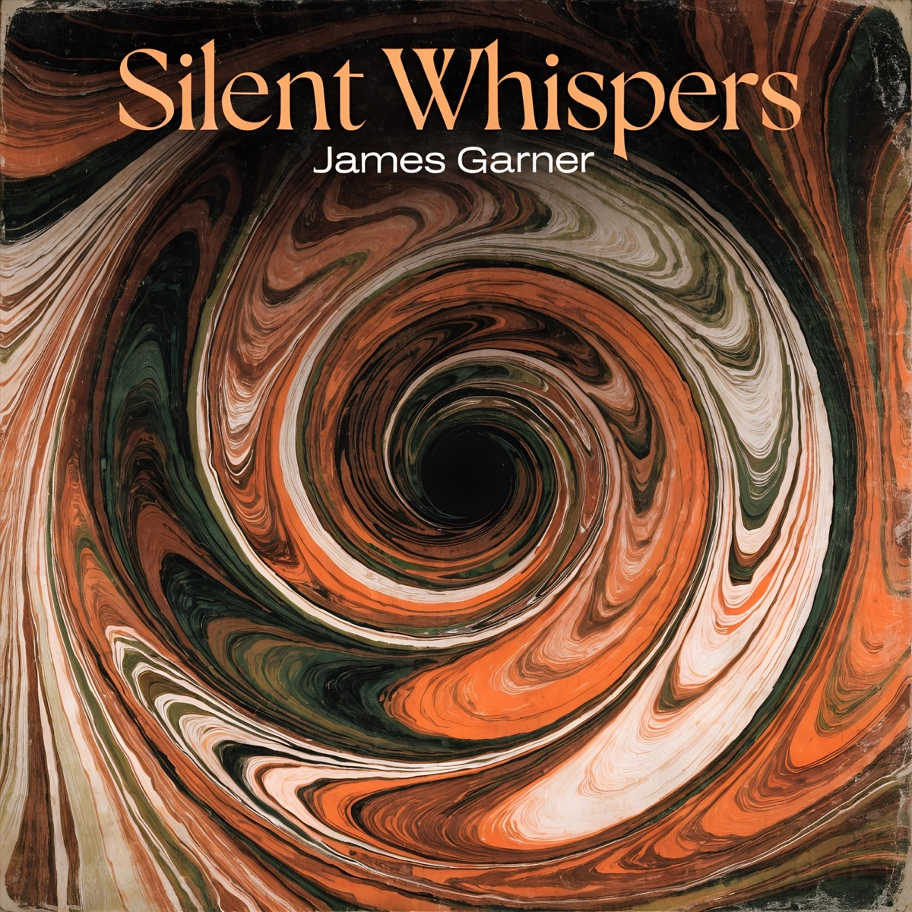

Live
30+ Years of
30+ Years of
Playing Live
From the Dublin Castle to the Barbican — decades of stages, sessions and festivals across London and Hertfordshire.
New EP · Out Now
The brand-new five-track EP from James Garner — bass player, songwriter and session musician from Hertfordshire. Out now on Spotify and Apple Music.

Online and in-studio bass guitar session work. Bringing the right groove and feel to your tracks across any genre.
Original music available for licensing in film, TV, advertising and media projects.
Collaborative songwriting and composition. From initial ideas to fully realised songs.
Five new songs from James Garner. Written, played and shaped over years of gigging and session work — now available to stream in full.
From the Dublin Castle to the Barbican — decades of stages, sessions and festivals across London and Hertfordshire.
Beyond the solo work, James holds down the low end in three very different live bands.
Hertfordshire's high-energy function band for weddings, parties and corporate events.
Visit site → Rock BandLoud, live and unmistakable — James on bass with the rock outfit THWP.
Visit site → Jazz BandSwing, jazz and standards done with style. Bass duties by James.
Visit site →